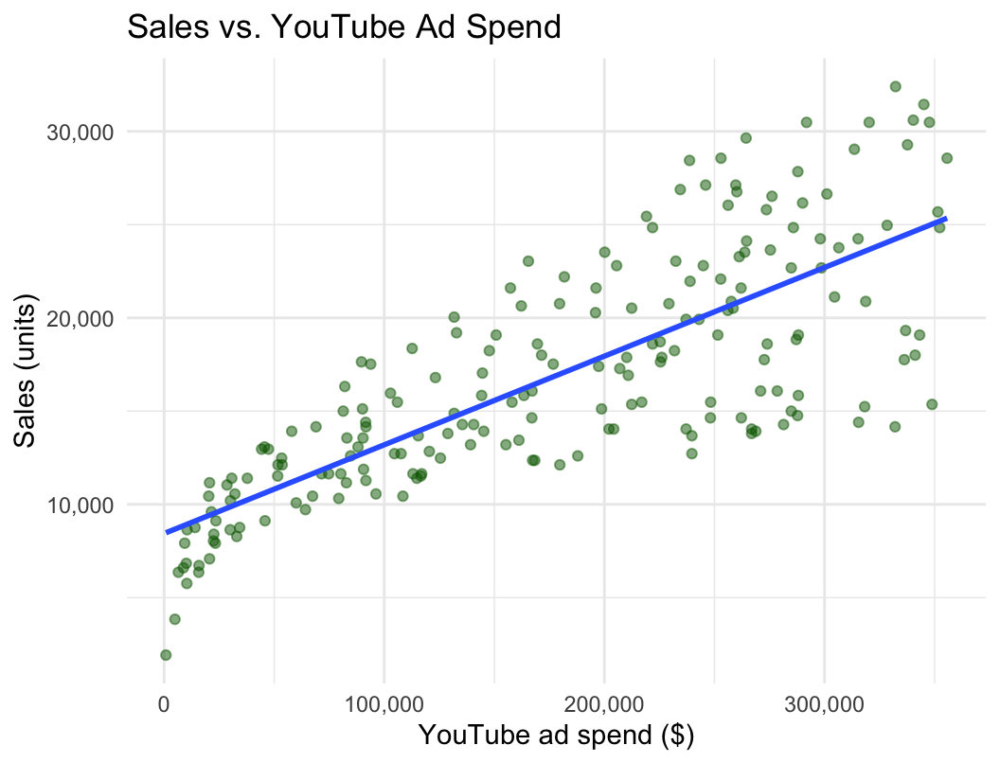
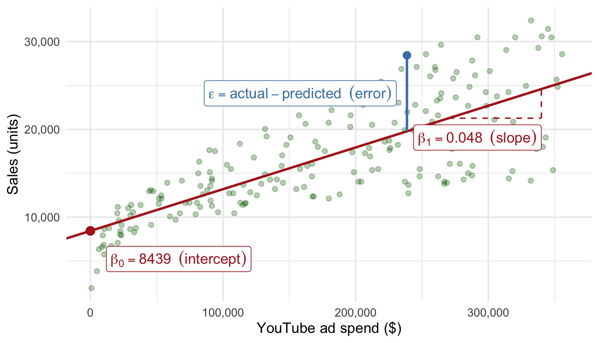
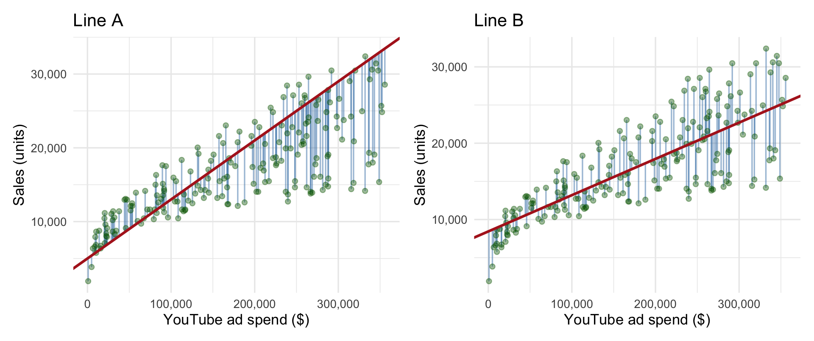
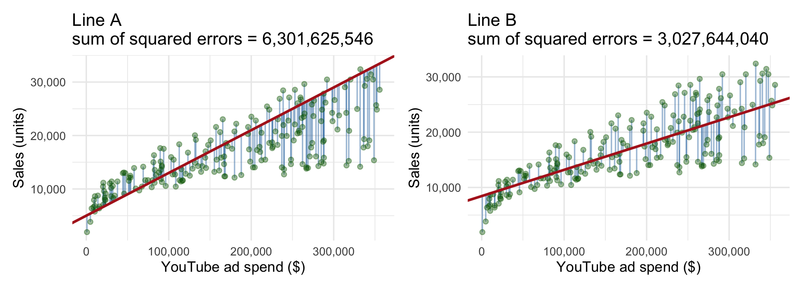
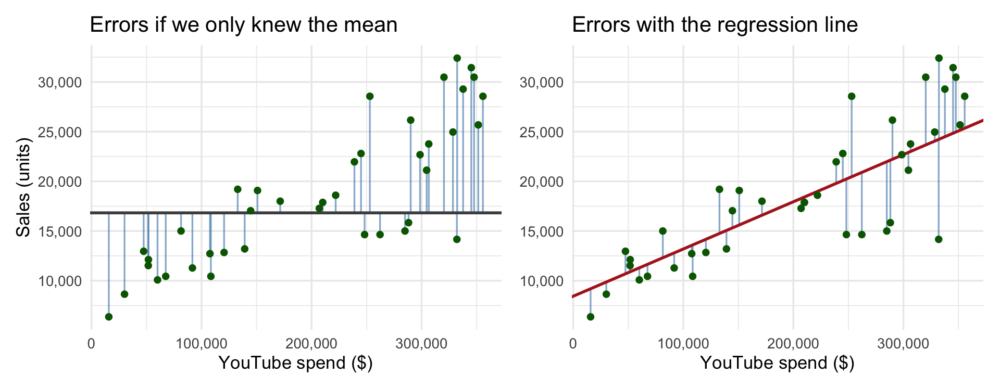
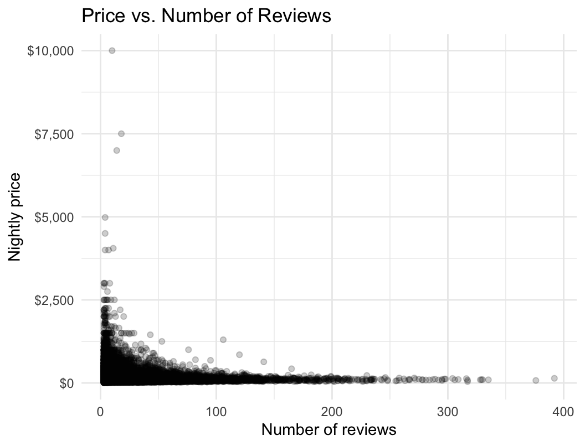
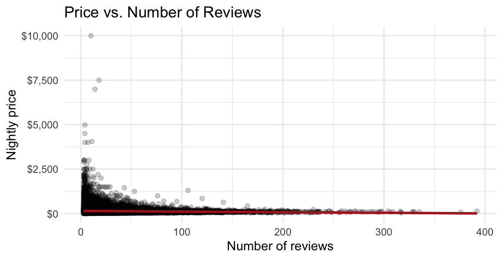

| x = youtube ($) | y = sales (units) |
|---|---|
| 276,120 | 26,520 |
| 53,400 | 12,480 |
| 20,640 | 11,160 |
| 181,800 | 22,200 |
| 216,960 | 15,480 |
MKT 566 · Fall 2026
USC Marshall School of Business
ratebeer-report.html + ai-log.md) is due Sunday, Sept. 20, 11:59 pm on BrightspaceLast week you looked at how two variables move together. Today you put a number on it, and learn to tell when that number can be trusted.
Today you learn to
What stays the same
Regression is the workhorse of marketing analytics. Homework 2, the Airbnb exercise, and most group projects are built on what we cover today.
In the code/ folder on the course website:
w4-1-ols-class.R: every chart and every regression in today’s deck, with a comment above each onedata/airbnb.csv: the Airbnb dataset used in the second half (and in the Airbnb exercise on Tuesday, Sept. 22)Download everything as one zip: w4-code.zip, open the folder in VS Code, and run along.
ggplot(marketing, aes(x = youtube, y = sales)) +
geom_point(alpha = 0.5, color = "darkgreen") +
geom_smooth(method = "lm", se = FALSE) +
scale_x_continuous(labels = comma) +
scale_y_continuous(labels = comma) +
labs(title = "Sales vs. YouTube Ad Spend",
x = "YouTube ad spend ($)",
y = "Sales (units)") +
theme_minimal()
We asked R for a straight line through the points. What line is it? What could a manager do with it?
\[\text{sales} = \beta_0 + \beta_1 \times \text{youtube}\]
In general \(Y = F(X)\): \(Y\) depends on \(X\) somehow. A linear regression assumes the simplest \(F\): a straight line. Machine learning (week 10) is mostly about learning fancier \(F\)’s.
For each row \(i\) of the data (each campaign):
\[y_i = \beta_0 + \beta_1 x_i + \epsilon_i\]
| x = youtube ($) | y = sales (units) |
|---|---|
| 276,120 | 26,520 |
| 53,400 | 12,480 |
| 20,640 | 11,160 |
| 181,800 | 22,200 |
| 216,960 | 15,480 |
Rows \(i = 1, \dots, 200\)

Every point has its own error: the vertical distance to the line. The intercept and the slope are the same for everyone.

Both lines run through the points. The blue segments are the errors. Which line is better, and how would you decide?

geom_smooth(method = "lm") drew last weekFor any intercept \(\beta_0\) and slope \(\beta_1\), the line predicts \(\hat{y}_i = \beta_0 + \beta_1 x_i\) and misses by \(\epsilon_i = y_i - \hat{y}_i\):
\[\text{SSE}(\beta_0, \beta_1) = \sum_{i=1}^{n} \epsilon_i^2 = \sum_{i=1}^{n} \left(y_i - \beta_0 - \beta_1 x_i\right)^2\]
\[(\hat{\beta}_0, \hat{\beta}_1) = \arg\min_{\beta_0,\, \beta_1} \; \text{SSE}(\beta_0, \beta_1)\]
| \(x_i\) | \(y_i\) | \(\hat{y}_i\) | \(\epsilon_i\) | \(\epsilon_i^2\) |
|---|---|---|---|---|
| 276,120 | 26,520 | 21,565 | 4,955 | 24,552,724 |
| 53,400 | 12,480 | 10,978 | 1,502 | 2,257,299 |
| 20,640 | 11,160 | 9,420 | 1,740 | 3,026,666 |
| 181,800 | 22,200 | 17,081 | 5,119 | 26,201,361 |
| ⋮ | ⋮ | ⋮ | ⋮ | ⋮ |
| ⋮ | ⋮ | ⋮ | ⋮ | 3,027,644,040 |
Line B (the OLS line), first 4 of 200 campaigns. Bottom row: the sum over all 200, the number on the previous slide.
“Least squares” means exactly this: square each error, add them up, and pick the line that makes the total smallest.
lm()
Call:
lm(formula = sales ~ youtube, data = marketing)
Residuals:
Min 1Q Median 3Q Max
-10063.2 -2345.4 -229.5 2480.5 8654.8
Coefficients:
Estimate Std. Error t value Pr(>|t|)
(Intercept) 8439.112259 549.411528 15.36 <2e-16 ***
youtube 0.047537 0.002691 17.67 <2e-16 ***
---
Signif. codes: 0 '***' 0.001 '**' 0.01 '*' 0.05 '.' 0.1 ' ' 1
Residual standard error: 3910 on 198 degrees of freedom
Multiple R-squared: 0.6119, Adjusted R-squared: 0.6099
F-statistic: 312.1 on 1 and 198 DF, p-value: < 2.2e-16Find the intercept and the slope in this output. What else is in there?
Always translate the slope into business units: “one more unit of \(X\) goes with \(\beta_1\) more units of \(Y\)”. If you cannot say it in a sentence a manager understands, you have not read the coefficient yet.
Our slope comes from these 200 campaigns. Another 200 would give a slightly different slope. The standard error (SE) measures how much it would move around.
Estimate Std. Error t value Pr(>|t|)
(Intercept) 8439.1123 549.4115 15.3603 0
youtube 0.0475 0.0027 17.6676 0Std. Error of the slope: 0.0027. The slope is pinned down to roughly \(0.0475 \pm 0.005\)t value = estimate / SE = \(0.0475 / 0.0027 \approx\) 17.7: the slope is about 18 standard errors away from zeroPr(>|t|) is the p-value: here so small that it rounds to 0 (two slides back, summary() printed it as <2e-16)Hypothesis testing is a way to decide between two claims with data:
The p-value answers: if \(H_0\) were true, how likely is a slope at least this far from zero, just by luck?
Decision rule
R’s stars: *** p < 0.001, ** p < 0.01, * p < 0.05, . p < 0.1
Smaller SE → larger t → smaller p → stronger evidence against “no relationship”
For YouTube, p is essentially 0: if spend and sales were unrelated, a slope of 0.0475 would almost never show up. So we are confident the relationship is real.
Two separate questions about every coefficient:
With 50,000 rows (Airbnb, later today) almost everything is “significant”, including effects too small to care about. With 18 rows almost nothing is, including effects that are real. Read the size first, then the stars.

Forty of the 200 campaigns. Without \(X\), the best guess for every campaign is the average. How much do the errors shrink once we use the line?
\[R^2 = 1 - \frac{\text{sum of squared errors with the line}}{\text{sum of squared errors with the mean}} = 1 - \frac{3,027,644,040}{7,800,694,200} = 0.61\]
A low \(R^2\) does not make a coefficient wrong. It says that \(X\) alone leaves most of \(Y\) unexplained. Whether that matters depends on your goal: prediction needs a high \(R^2\), understanding one relationship does not.
| In the output | What it is | How to read it |
|---|---|---|
Estimate |
\(\hat\beta\), the coefficient | “One more unit of \(X\) goes with \(\hat\beta\) more units of \(Y\)” |
Std. Error |
Precision of the estimate | Smaller is better. Would the estimate move much with new data? |
t value |
Estimate / SE | How many SEs from zero. Beyond ±2 is “significant” |
Pr(>|t|) |
p-value | Chance of a t this large if the true coefficient is 0 |
Residual standard error |
Typical size of the error | In units of \(Y\) |
R-squared |
Share of the variation in \(Y\) explained | 0 to 1 |
F-statistic |
Do the predictors explain anything together? | Tiny p-value: yes |
All else equal (ceteris paribus), how much \(Y\) changes when \(X\) moves by one unit. What “one unit” means depends on how you wrote the model:
| Model | Equation | Reading of \(\beta_1\) |
|---|---|---|
| Level-level | \(Y = \beta_0 + \beta_1 X\) | One more unit of \(X\) → \(\beta_1\) more units of \(Y\) |
| Log-level | \(\ln Y = \beta_0 + \beta_1 X\) | One more unit of \(X\) → about \(100 \times \beta_1\) percent more \(Y\) |
| Level-log | \(Y = \beta_0 + \beta_1 \ln X\) | 1% more \(X\) → about \(\beta_1 / 100\) more units of \(Y\) |
| Log-log | \(\ln Y = \beta_0 + \beta_1 \ln X\) | 1% more \(X\) → about \(\beta_1\) percent more \(Y\) (an elasticity) |
The percentage readings are approximations that work when \(\beta_1\) is small (say below 0.2). The exact formula for log-level is \((e^{\beta_1} - 1) \times 100\%\).
1. Skewed variables. Price, income, sales, number of reviews: many small values, a few huge ones. You saw in week 2 that a log scale makes such distributions readable. The same is true for a regression: without the log, the few huge values pull the line around.
2. Multiplicative relationships. A $1 price increase means something very different at $5 and at $100. In logs, the model works in percentages, which is how the relationship usually behaves.
3. Interpretation. Managers think in percentages: “a 10% price increase lowers demand by 8%”. A log-log coefficient is that number, the elasticity.
Rule of thumb: log a variable that is positive and right-skewed (money, counts). Leave ratings, shares, and dummies as they are.
Logs change the question you are asking, not just the fit. Level: “how many more units?”. Log: “what percent more?”. Choose the one your manager needs.
m_level <- lm(sales ~ youtube, data = marketing)
m_loglev <- lm(log(sales) ~ youtube, data = marketing)
m_loglog <- lm(log(sales) ~ log(youtube), data = marketing)
stargazer(m_level, m_loglev, m_loglog, type = "text",
column.labels = c("level-level", "log-level", "log-log"),
omit.stat = c("f", "ser", "adj.rsq"), digits = 4, digits.extra = 4,
no.space = TRUE)
================================================
Dependent variable:
-----------------------------------
sales log(sales)
level-level log-level log-log
(1) (2) (3)
------------------------------------------------
youtube 0.0475*** 0.000003***
(0.0027) (0.0000002)
log(youtube) 0.3550***
(0.0149)
Constant 8,439.1120*** 9.0973*** 5.4781***
(549.4115) (0.0362) (0.1756)
------------------------------------------------
Observations 200 200 200
R2 0.6119 0.6156 0.7421
================================================
Note: *p<0.1; **p<0.05; ***p<0.01stargazer() puts several models side by side, with standard errors in parentheses and stars for significance. This is the table format for Homework 2 and for your project. Column labels, a title, and readable variable names are the difference between a table and a wall of numbers.
Elasticities below 1 mean \(Y\) responds less than proportionally: doubling YouTube spend does not double sales.
\[y_i = \beta_0 + \beta_1 x_{1,i} + \beta_2 x_{2,i} + \dots + \beta_k x_{k,i} + \epsilon_i\]
Everything we said still applies, with one change in the reading: each \(\beta_j\) is the change in \(Y\) for one more unit of \(x_j\), holding the other predictors fixed.
In R, add predictors to the formula with +:
Before you look: last week’s charts showed YouTube strong, Facebook noisier, newspaper flat. Which coefficient do you expect to be largest? Which one close to zero?
=========================================
Dependent variable:
----------------------------
sales
YouTube only all three
(1) (2)
-----------------------------------------
youtube 0.048*** 0.046***
(0.003) (0.001)
facebook 0.189***
(0.009)
newspaper -0.001
(0.006)
Constant 8,439.112*** 3,526.667***
(549.412) (374.290)
-----------------------------------------
Observations 200 200
R2 0.612 0.897
=========================================
Note: *p<0.1; **p<0.05; ***p<0.01Which channel has the largest coefficient? Which one is essentially zero?
“Holding the others fixed” is what makes multiple regression useful. Campaigns that spend more on newspaper also spend more on Facebook (correlation 0.35). The single-predictor regression of sales on newspaper would give newspaper credit for Facebook’s work.
[1] "listing_id" "price" "bathrooms" "bedrooms"
[5] "cancellation_policy" "guests_included" "property_type" "zipcode"
[9] "star_rating" "reviews_count" "city" "room_type" price bedrooms star_rating reviews_count city room_type
<int> <int> <num> <int> <char> <char>
1: 238 2 5.0 79 Los Angeles Entire home
2: 89 1 5.0 117 Austin Entire home
3: 89 1 5.0 91 Miami Private room
4: 175 2 4.5 15 Austin Entire home
Austin Boston Los Angeles Miami New York City
10311 6147 27611 6749 18 50,836 listings with a nightly price, size, star rating, number of reviews, city, and room type. Four real cities and, for reasons lost to history, 18 listings in New York. Keep that in mind.
Let’s predict price as a function of the number of reviews a listing has.
Write down one sentence: what sign do you expect for the slope, and why?
Two stories, opposite signs:

50,836 points. What do you see? Does a straight line make sense here?

Call:
lm(formula = price ~ reviews_count, data = airbnb)
Residuals:
Min 1Q Median 3Q Max
-145.0 -74.9 -39.5 23.3 9855.4
Coefficients:
Estimate Std. Error t value Pr(>|t|)
(Intercept) 148.04066 0.90102 164.30 <2e-16 ***
reviews_count -0.34672 0.03195 -10.85 <2e-16 ***
---
Signif. codes: 0 '***' 0.001 '**' 0.01 '*' 0.05 '.' 0.1 ' ' 1
Residual standard error: 165.9 on 50834 degrees of freedom
Multiple R-squared: 0.002311, Adjusted R-squared: 0.002291
F-statistic: 117.8 on 1 and 50834 DF, p-value: < 2.2e-16Read the slope, the p-value, and the R-squared. Do they agree with the scatter plot?
Significant, and useless for prediction. The stars say the slope is not zero. The size and the \(R^2\) say it does not matter. Both readings are correct, and you need both.
Regression of Price on Number of Reviews
=============================================
Dependent variable:
---------------------------
Nightly price (dollars)
---------------------------------------------
Number of reviews -0.35***
(0.03)
Constant 148.04***
(0.90)
---------------------------------------------
Observations 50,836
R2 0.002
=============================================
Note: *p<0.1; **p<0.05; ***p<0.01Same numbers as summary(), laid out for a reader. Standard errors in parentheses, stars for significance, \(N\) and \(R^2\) at the bottom.
City is a word, not a number. R handles this with a factor: a categorical variable stored as numbers with labels attached.
[1] Miami Austin Miami Boston
Levels: Austin Boston Miami[1] 3 1 3 2lm() converts a text column into a factor automatically. But what does a slope on “city” mean? Let’s look
Regression of Price on City
=============================================
Dependent variable:
---------------------------
Nightly price (dollars)
---------------------------------------------
cityBoston -17.60***
(2.67)
cityLos Angeles -36.77***
(1.91)
cityMiami -40.93***
(2.59)
cityNew York City -28.17
(39.03)
Constant 169.95***
(1.63)
---------------------------------------------
Observations 50,836
R2 0.01
=============================================
Note: *p<0.1; **p<0.05; ***p<0.01Five cities, four coefficients. Where did Austin go? And what is the constant?
Behind the scenes, R turns city into dummy variables (0/1), one per city, and drops one: the base level, Austin (first alphabetically).
| Listing | City | Boston | LA | Miami | NYC |
|---|---|---|---|---|---|
| 1 | Austin | 0 | 0 | 0 | 0 |
| 2 | Boston | 1 | 0 | 0 | 0 |
| 3 | LA | 0 | 1 | 0 | 0 |
| 4 | Miami | 0 | 0 | 1 | 0 |
| 5 | NYC | 0 | 0 | 0 | 1 |
“Not significant” can mean “no difference” or “not enough data”. Look at the standard error and the group size before you conclude anything.
airbnb$city <- relevel(factor(airbnb$city), ref = "Los Angeles")
m_city2 <- lm(price ~ city, data = airbnb)
stargazer(m_city, m_city2, type = "text", column.labels = c("base: Austin", "base: Los Angeles"),
dep.var.labels = "Nightly price (dollars)", omit.stat = c("f", "ser", "adj.rsq"),
digits = 2, no.space = TRUE)
================================================
Dependent variable:
------------------------------
Nightly price (dollars)
base: Austin base: Los Angeles
(1) (2)
------------------------------------------------
cityAustin 36.77***
(1.91)
cityBoston -17.60*** 19.18***
(2.67) (2.33)
cityLos Angeles -36.77***
(1.91)
cityMiami -40.93*** -4.16*
(2.59) (2.25)
cityNew York City -28.17 8.61
(39.03) (39.01)
Constant 169.95*** 133.17***
(1.63) (1.00)
------------------------------------------------
Observations 50,836 50,836
R2 0.01 0.01
================================================
Note: *p<0.1; **p<0.05; ***p<0.01Same data, same fit (same \(R^2\)), different comparison. Pick the base your reader cares about: the largest group, or the “status quo” option.
Price is $37 lower in Los Angeles than in Austin. Reviews go with slightly lower prices. Facebook spend goes with more sales. All of these are associations. None of them tells you what happens if you change \(X\).
Words matter. Write “a one-unit increase in \(X\) is associated with a \(\beta_1\) change in \(Y\)”, not “\(X\) causes \(Y\)”, unless you have a reason to believe it, and can say why.
stargazer tables and an executive memoBefore Tuesday, run today’s script on the Airbnb data and try one thing on your own: replace reviews_count with bedrooms in m1. Predict the slope first, then explain back what the intercept means.
Code and data to reproduce today’s regressions, on the course website:
w4-code.zip: one-click download of everything beloww4-1-ols-class.R: every chart and regression shown todaydata/airbnb.csv: the Airbnb dataset (also used in the Airbnb exercise on Tuesday, Sept. 22)Required reading: Chapter 3.4 of R for Marketing Students. Optional: Lecture 6 of Data Storytelling for Marketers and Chapter 7 of R for Marketing Research and Analytics.
MKT 566 · Marketing Analytics